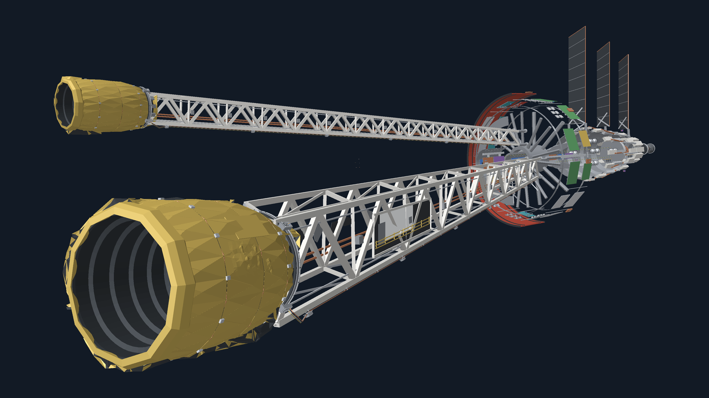

Meridian S01 Exterior Complete
The M07.4 master models the 900 m Meridian observatory, from its twin telescope trusses to its rotating habitat, three radiator fins and aft drive.
Download exterior grammar View companion interior grammar
Sample render

Using the grammar
Open Meridian_S01_Exterior_Complete.p3d with File → Open in ProGen3D, regenerate and fit the view to the model. Load the exterior and interior as separate scenes to stay within the original editor’s 5,000-instance limit.
Load the exterior to inspect the complete silhouette, compare the two optical trusses or follow the service bay into the aft structure. To inspect the exterior hatch open, change the second Start argument from 0 to 105 degrees in a working copy and regenerate.
Model details
| Telescope structure | Port and starboard optical assemblies sit on separate trusses with service harnesses, mechanical fittings and thermal blankets. |
|---|---|
| Airlock | A fixed-hull pressure shell carries the exterior circular hatch and the inner crew bypass hatch. |
| Default pose | MeridianAirlockRefit(60 0 0) selects a 60-second habitat rotation period and closes both controlled hatches at time zero. |
| S01 release compile | 193 objects, 4,988 instances and 167,846 triangles |
| Instantiated primitives | Extrude, SweepDisk, Cube, Revolve, Sphere, Loft, SweepProfile |
| Material identifiers | goldbrushedmetal, lightgoldpolishedmetal, copperbrushedmetal, slategreymattemetal, silverbrushedmetal, blackgreymattemetal, blackmattemetal, blackbluepolishedglass, whitebeigemattepaint, warmwhiteemissivepaint, amberemissivepaint, redbrownmattemetal, ivorymattepaint, warmbeigemattepaint, sandmattepaint, slategreymattepaint, paleochremattepaint, paleblueemissivepaint, palebluemattepaint, tealmattepaint, greenmattepaint, paleredmattepaint, purplemattepaint, bluemattemetal |
| Source lines | 2622 |
Verification
Source bytes match the S01 release. At time zero with seed 7, the S01 native WebAssembly compiler reproduced the release instance and triangle counts and reported zero issues.
Catalogue evidence score 80/100. Visual similarity has not been measured. Rating methodology
The same source bytes were also released as Meridian_M074_Master.p3d.
727,268 bytes · Git blob 36bf75b0859719df354d14318e30e77218d07430 · Full metadata